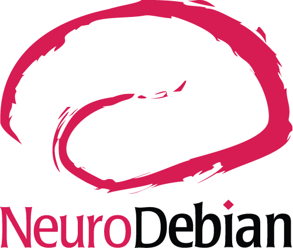
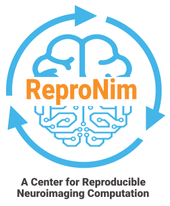
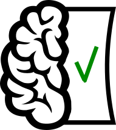
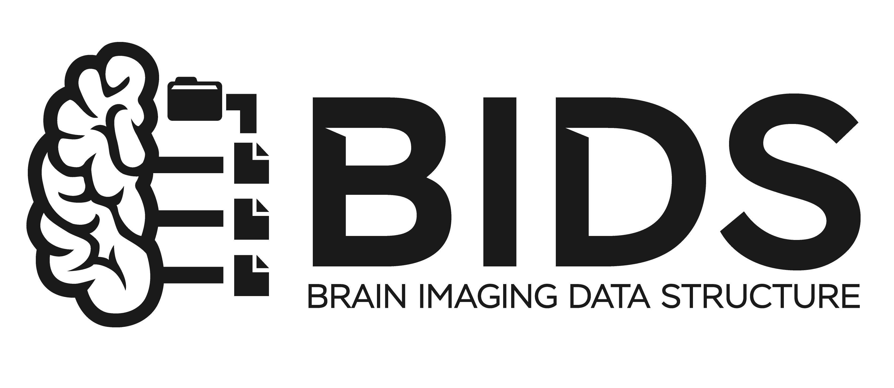

ReproFlow & YODA: Structure your studies,
observable and reproducible they become
Version control everything. Look up you must not. Compose modularly you shall.
 @yarikoptic
@yarikoptic
Live slides/Sources: https://datasets.datalad.org/centerforopenneuroscience/talks/2026-repronim-YODA-BIDS-webinar.html
More info: https://repronim.org/about/webinars/






Reality Check

Disclaimer: This talk will not make you at once into AI coder.
But it will point to a few approaches you can start using TODAY!
And you MUST NOT forget about social aspect of the retreat!